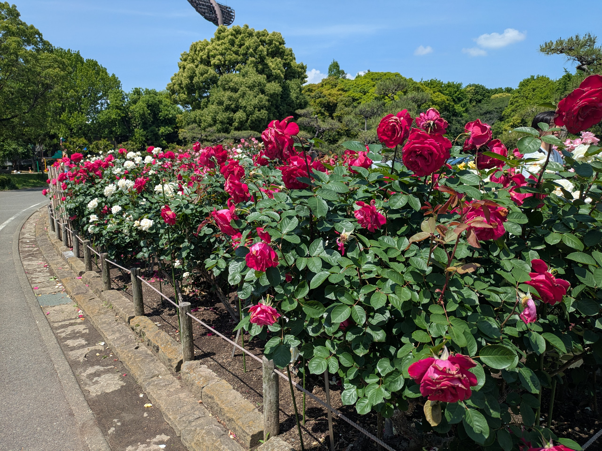

2025-05-11 04:48:10
2025年5月11日(日) 平塚総合公園（神奈川）天気：晴れ 気温８時:21.5℃、12時:26.1℃
| No | 白鷺 | 氏 名 | 種目 | タイム | フル百 |
| 1 | 175 | 福井 康太 | フル | 4:42:55 | 841 |
| 2 | 403 | 飯田 和好 | フル | 5:16:07 | 881 |
| 3 | 318 | 阿部 真 | フル | 6:41:02 | 818 |
| 4 | 333 | 山口 義治 | フル | 6:51:47 | 827 |
| 5 | 340 | 島田八十美 | フル | 7:19:14 | 830 |
| 6 | 28 | 大野 清美 | フル | 8:11:55 | 532 |
| 7 | 319 | 本内 克洋 | フル | 8:12:36 | 839 |
| 8 | 157 | 佐藤 儀雄 | フル | 8:20:13 | 790 |
| 9 | 229 | 瀬戸 君子 | フル | 8:45:00 | 749 |
| 10 | 438 | 河並 明彦 | 24㎞ | 6:48:12 | 860 |
| 11 | 317 | 石井 功 | 11.9㎞ | 3:30:00 | 817 |
| 12 | 67 | 佐藤 利和 | 10km | 1:20:00 | 694 |
| 13 | 小野(佐藤伴走） | 10km | 1:20:00 | ||
| 14 | 145 | 植田 秀夫 | 6.8㎞ | 1:34:00 | 787 |
| 15 | 203 | 坪田 弘美 | 5.1㎞ | 1:04:19 | 148 |
本内克洋さんの報告です
大会結果です 非常にコンディションに恵まれ９名がフル、４名がそれぞれの距離で
皆さん最後まで楽しくマラソンしていました。
公園内も家族連れでにぎやかでした。
球場・競技場・体育館とそれぞれイベントがありましたが 影響は少なかったです。

公園内のバラもきれいに咲いていました。